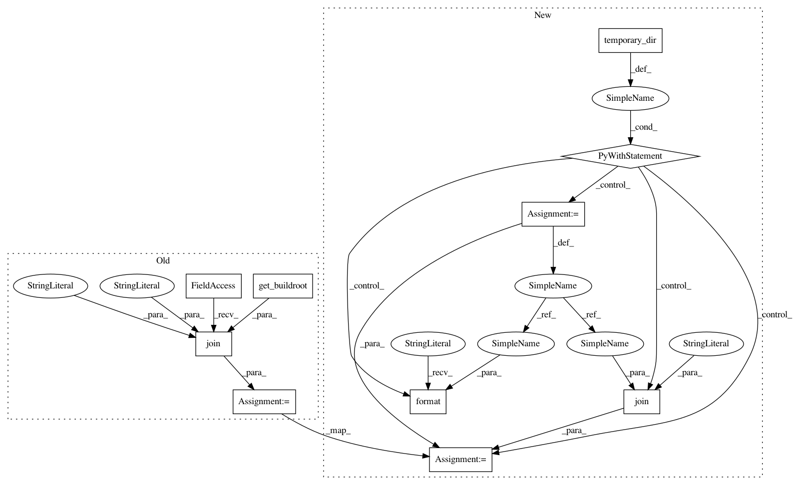

7f2fc978bc95b5a1bc14c2b8d5e4cb8611989e42,tests/python/pants_test/backend/python/tasks/test_python_distribution_integration.py,PythonDistributionIntegrationTest,test_pants_binary_dep_isolation_with_multiple_targets,#PythonDistributionIntegrationTest#,82
Before Change
def test_pants_binary_dep_isolation_with_multiple_targets(self):
pex1 = os.path.join(get_buildroot(), "dist", "main_with_no_conflict.pex")
pex2 = os.path.join(get_buildroot(), "dist", "main_with_no_pycountry.pex")
try:
command=["binary", "{}:main_with_no_conflict".format(self.fasthello_install_requires),
"{}:main_with_no_pycountry".format(self.fasthello_install_requires)]
pants_run = self.run_pants(command=command)
After Change
self.assertIn("fasthello", pants_run.stderr_data)
def test_pants_binary_dep_isolation_with_multiple_targets(self):
with temporary_dir() as tmp_dir:
pex1 = os.path.join(tmp_dir, "main_with_no_conflict.pex")
pex2 = os.path.join(tmp_dir, "main_with_no_pycountry.pex")
command=[
"--pants-distdir={}".format(tmp_dir),
"binary",
"{}:main_with_no_conflict".format(self.fasthello_install_requires),
"{}:main_with_no_pycountry".format(self.fasthello_install_requires)]
pants_run = self.run_pants(command=command)
self.assert_success(pants_run)
// Check that the pex was built.
self.assertTrue(os.path.isfile(pex1))
self.assertTrue(os.path.isfile(pex2))
// Check that the pex 1 runs.
output = subprocess.check_output(pex1)
self._assert_native_greeting(output)
// Check that the pex 2 fails due to no python_dists leaked into it.
try:
output = subprocess.check_output(pex2)
except subprocess.CalledProcessError as e:
self.assertNotEquals(0, e.returncode)
def test_pants_resolves_local_dists_for_current_platform_only(self):
// Test that pants will override pants.ini platforms config when building
// or running a target that depends on native (c or cpp) sources.
with temporary_dir() as tmp_dir:
In pattern: SUPERPATTERN
Frequency: 3
Non-data size: 10
Instances
Project Name: pantsbuild/pants
Commit Name: 7f2fc978bc95b5a1bc14c2b8d5e4cb8611989e42
Time: 2018-05-07
Author: rogerj.2010@gmail.com
File Name: tests/python/pants_test/backend/python/tasks/test_python_distribution_integration.py
Class Name: PythonDistributionIntegrationTest
Method Name: test_pants_binary_dep_isolation_with_multiple_targets
Project Name: pantsbuild/pants
Commit Name: 7f2fc978bc95b5a1bc14c2b8d5e4cb8611989e42
Time: 2018-05-07
Author: rogerj.2010@gmail.com
File Name: tests/python/pants_test/backend/python/tasks/test_python_distribution_integration.py
Class Name: PythonDistributionIntegrationTest
Method Name: test_with_install_requires
Project Name: pantsbuild/pants
Commit Name: 6b11c59ad9ddaa6dc67542a895ff849cae7af15c
Time: 2018-09-04
Author: 1305167+cosmicexplorer@users.noreply.github.com
File Name: tests/python/pants_test/backend/python/tasks/test_python_distribution_integration.py
Class Name: PythonDistributionIntegrationTest
Method Name: test_python_distribution_with_setup_requires
Project Name: pantsbuild/pants
Commit Name: 7f2fc978bc95b5a1bc14c2b8d5e4cb8611989e42
Time: 2018-05-07
Author: rogerj.2010@gmail.com
File Name: tests/python/pants_test/backend/python/tasks/test_python_distribution_integration.py
Class Name: PythonDistributionIntegrationTest
Method Name: test_pants_binary_dep_isolation_with_multiple_targets